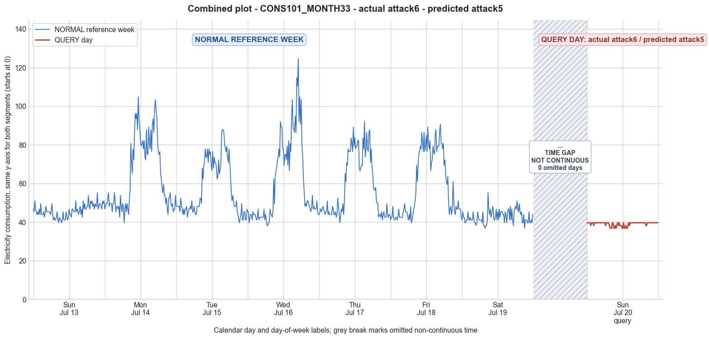

CONS101_MONTH33 · actual attack6 · predicted attack5
- Pair
- CONS101_MONTH33
- GT
- attack6
- Prediction
- attack5
- Binary GT
- attacked
- Binary Prediction
- attacked
- Source
- E010R1
- Parse
- stored
- Date
- 2014-07-20
- Weekday
- Sunday
- Latency
- 1.34 min
- Tokens
- 8032

Final output
Classification: - Manipulated Identified Attack: - Most Likely: Attack 5 - Confidence: High - Reasoning: The query day consumption series is extremely flat, consisting almost entirely of three values (36.83, 38.24, 39.65). These values are approximately 0.8, 0.83, and 0.865 times the average of the reference Sunday (45.84). This matches the definition of Attack 5: each sample is replaced by a false value obtained by multiplying the average normal consumption by a random factor between 0 and 1. The resultant profile lacks any trace of the normal daily trend and is heavily attenuated. Attack 1 (constant multiplier) was excluded because the original trend would have been preserved in shape, which is not seen here. Attack 6 (cut‑off) cannot produce values lower than the original minimum (39.66), yet the query day contains 36.83 and 38.24. Attack_Behavior_Explanation: - How consumption values are manipulated relative to the normal week: The attacker first computes the average energy usage of a typical Sunday (mean ≈ 45.84). Each 15‑minute reading is then replaced by the product of that average and a randomly chosen fraction (e.g., 0.80, 0.83, 0.865), yielding a small set of low, repetitive values (36.83, 38.24, 39.65) that are scattered across the day with no connection to the actual load pattern. - Impact on magnitude and trend: Magnitude is substantially reduced (daily mean drops from 45.84 to 39.07, and the maximum falls from 55.24 to 39.65). The normal weekday‑like shape (morning dip, midday peak, evening decline) is completely erased; the profile becomes flat and patternless. - Possible technical causes: False data injection – an adversary intercepts and manipulates the meter data stream, substituting genuine measurements with fabricated low‑variance values before they reach the utility.
Prompt
You are a domain expert in smart grid security and electricity theft analysis, with deep knowledge of non-technical loss (NTL) attack patterns in smart meters. You are given: 1. A plot of one week of original (normal) energy consumption for a smart meter, provided as context for the customer's typical consumption behavior. 2. A plot of one day of energy consumption for the same smart meter, which may or may not be manipulated. Below are common attack types, each defined by how consumption values are altered, their impact on magnitude and trend, and their possible technical causes. Attack 0: Generated by replacing all electricity consumption samples with zero values for the entire observation duration. Simulates a scenario where no energy usage is reported at all. May be caused by a total meter bypass or severe meter malfunction. Completely eliminates both the trend and magnitude of the consumption profile. Attack 1: Multiplies the actual energy consumption by a constant random value between (0,1). The lower the factor, the higher the severity. Can be triggered by meter bypass, magnetic interference, reverse current, and false data injection. The consumption trend remains the same but the magnitude is uniformly reduced. Attack 2: Generated by replacing consumption samples with zeros for a random duration. Also known as an on-off attack. Can be caused by full meter bypass, false data injection, and reverse current. Changes both the trend and amplitude. Attack 3: The actual consumption is multiplied by different random factors between 0 and 1, with a unique factor per sample. Similar to Attack 1 but the scaling factor varies per reading. Caused by meter bypass, magnetic interference, and reverse current. Changes both the trend and amplitude. Attack 4: Simulates energy theft over a randomly selected period within the observation window. All measurements in that period are reduced. Caused by meter bypass, magnetic interference, reverse current, and false data injection. Changes both the trend and amplitude. Attack 5: Each sample is replaced by a false value obtained by multiplying the average normal consumption by a random variable between 0 and 1, with a different variable per sample. Caused by false data injection. Produces a completely different pattern from the original consumption profile, changing both trend and magnitude. Attack 6: A random cut-off point is selected and all consumption values above it are replaced by that cut-off value. The attacker avoids exceeding a predefined maximum limit. Mainly caused by false data injection. Changes both the trend and amplitude. Attack 7: A random cut-off point is subtracted from each sample; if the result is negative, zero is reported. Similar to Attack 6 but replaces exceeding values with zero instead of the cut-off point. May be caused by false data injection or total meter bypass. Does not change the trend but reduces overall consumption. Attack 9: All samples are replaced by the average daily energy consumption, resulting in a flat constant profile. Easily detectable because constant consumption does not reflect normal customer behavior. Caused by false data injection. Eliminates all trends. Attack 10: Reverses the consumption pattern without reducing the total amount. Applicable when the electricity company uses time-varying pricing, allowing the attacker to shift high consumption to off-peak periods. Caused by false data injection. Changes the trend without decreasing total consumption. Attack 12: The attacker replaces their consumption pattern with that of a lower-consuming user. The legitimate user unknowingly pays the adversary's electricity bill. Caused by false data injection. Attack IEEE: For each 15-minute interval across the entire day, the consumer either reports the actual electricity consumption or substitutes it with zero. The result is a profile where some intervals reflect real consumption while others are zeroed out, creating an irregular pattern across the full day. May be caused by false data injection. Changes both the trend and amplitude. Given the two plots, determine: 1. Whether the day is attacked or original - compare the flagged day against the normal week and assess whether the consumption pattern is consistent with normal behavior or shows signs of manipulation. If the day is consistent with the customer's typical consumption behavior, classify it as original and provide no further analysis. If manipulation is detected, proceed to point 2. 2. Which attack type this most likely is - identify the single most probable attack and justify your choice based on how the flagged day deviates from the normal week. 3. The behavior of the identified attack - explain how the consumption values are manipulated, their impact on magnitude and trend, and the possible technical causes behind this type of attack. Output Format: Classification: - Original | Manipulated Identified Attack: (fill only if manipulated) - Most Likely: Attack X - Confidence: High | Medium | Low - Reasoning: Why it matches Attack X and why Attack Y and Attack Z were ruled out (list top 2 alternatives considered) Attack_Behavior_Explanation: (fill only if manipulated) - How consumption values are manipulated relative to the normal week - Impact on magnitude and trend - Possible technical causes
Reasoning content
We are given reference week and query day data. The query day is DAY_ID=0, with temporal features cal_month=7, dow=6 (Sunday), dom=7. Note that the reference week also has a Day 0 with dow=6 (Sunday), but that is dom=0. So the query day is another Sunday (a week later). The query day statistics: min=36.83, max=39.65, std=0.99, mean=39.07. Compare with reference week: Day 0 (also Sunday) had min=39.66, max=55.24, std=3.22, mean=45.84. The other days have higher consumption and variability. The query day's consumption is almost flat, varying only between 36.83 and 39.65, with very low standard deviation. The values are almost constant around 39.65 with occasional dips to 38.24 and 36.83. The pattern looks like a nearly constant consumption, very low variability, unlike any normal day in the reference week. The reference week's Sunday (Day 0) has a range from 39.66 to 55.24 with some fluctuations. Day 6 (Saturday) has low variability (std=3.31, range 36.83-55.24), but still has some structure and mid-day peaks. The query day is suspiciously flat, with most values at 39.65, sprinkles of 38.24 and 36.83. It's almost like the meter is reporting a near-constant value, reminiscent of Attack 9: all samples replaced by average daily energy consumption, resulting in a flat constant profile. Attack 9 description: "All samples are replaced by the average daily energy consumption, resulting in a flat constant profile." But here, the values are not exactly identical; they vary between three values. However, note that the mean is 39.07, and the values are clustered around 39.65, 38.24, 36.83. This could be an approximation to a constant, maybe with some noise, or an attack that sets values to a low constant with occasional changes. Alternatively, Attack 5: each sample replaced by a false value obtained by multiplying the average normal consumption by a random factor between 0 and 1. The average of Day 0 reference is 45.84. Multiplying by random factors could yield values around that range. For instance, 45.84*0.86 ≈ 39.42, 45.84*0.83 ≈ 38.05, 45.84*0.80 ≈ 36.67. Those correspond closely to 39.65, 38.24, 36.83. The query day values are exactly these three numbers. So it appears that the query day consumption values are all from the set {36.83, 38.24, 39.65}. That matches multiplying the average normal consumption (maybe from the reference Sunday? 45.84) by factors. Average of reference Day 0 is 45.84. Compute: 45.84 * 0.86 ≈ 39.65? 45.84 * 0.8 = 36.672, close to 36.83. 45.84 * 0.83 ≈ 38.05, close to 38.24. There's a slight discrepancy: 45.84 * 0.86 = 39.4224, not 39.65. 45.84 * 0.865 = 39.65 exactly? 45.84 * 0.865 = 39.6516, so that rounds to 39.65. So it's plausible that they used a set of random multipliers to generate three fake values. Attack 5 describes replacing each sample with a false value obtained by multiplying the average normal consumption by a random factor between 0 and 1 per sample. That yields a completely different pattern from the original, changing both trend and magnitude. The query day pattern has no trend, just random-looking values around a low level. This matches Attack 5 well.
Consider Attack 1: multiply actual consumption by constant random value between 0 and 1. That would preserve the trend shape but scale down. The query day shows no trend shape like the original Sunday; it's nearly flat. The original Sunday Day 0 had some variation: a morning dip to 39.66, then rising to 55.24 peaks. The scaled-down version would still show relative variations. Here, the values are almost constant, so not Attack 1.
Attack 2: on-off attack (zero for random durations). The query day has no zeros; all values are above 36, so not Attack 2.
Attack 3: multiply by different random factors per sample, using actual consumption as base. Then the pattern would still reflect the original shape but with scaled fluctuations. The original shape is not evident here; it's almost flat. So not Attack 3.
Attack 4: energy theft over random period, reducing measurements. That would show some normal-like pattern and then reduced pattern, but here it's consistently low and flat throughout the day, not Attack 4.
Attack 6: cut-off value, all above replaced by cut-off. The query day's values are all below 40, and the observed max is 39.65. If a cut-off was set at around 39.65, then original values above that would be set to 39.65. The original Sunday had values up to 55.24, so many would be cut to 39.65. But then we'd expect a distribution with many 39.65 and some lower values reflecting the lower original values. The lower values in original Sunday were around 39.66-43.91 in the early morning, then higher later. Under cut-off, the low values would stay as they were (e.g., 39.66 becomes 39.66, 41.08 stays 41.08, etc.), but the high values become 39.65. So we'd see the original low values unchanged and many 39.65s. However, the query day's low values are 38.24 and 36.83, which are lower than any value in the reference Sunday (min was 39.66). So Attack 6 does not explain values lower than the original minimum, unless the cut-off point is lowered below original min? Attack 6 says: "A random cut-off point is selected and all consumption values above it are replaced by that cut-off value." It doesn't reduce values below the original. So the existence of 36.83 and 38.24, which are below the original Sunday's minimum, rules out Attack 6 (since original values were all >=39.66). Attack 7 is similar but replaces exceeding values with zero, not zero here.
Attack 9: all samples replaced by average daily energy consumption. The average of original Sunday was 45.84, but here the values are not constant 45.84; they are lower and varying. So not Attack 9.
Attack 10: reversal of pattern without reducing total. The total consumption of query day: mean 39.07 * 96 = 3750.72. Reference Sunday mean 45.84 * 96 = 4400.64. So total is reduced, so not Attack 10.
Attack 12: replace with another user's pattern. The pattern is constant-like, not typical consumption shape, so unlikely.
Attack IEEE: substitutes some intervals with zero. No zeros, so not Attack IEEE.
Thus, Attack 5 is the best match: false values obtained by multiplying average normal consumption by random factors per sample. The average normal consumption is likely the reference Sunday average (45.84). The resulting values are 36.83, 38.24, 39.65, which are close to 0.8, 0.83, 0.865 times 45.84. The random factors yield a completely different pattern with no trend, low magnitude, and low variability.
Therefore, the day is Manipulated. Most likely Attack 5. Confidence: High, because the pattern matches exactly the description and the values are consistent with such a manipulation, and other attacks are ruled out.
Now, output:
Classification:
- Manipulated
Identified Attack:
- Most Likely: Attack 5
- Confidence: High
- Reasoning: The query day shows a nearly constant consumption profile with values limited to three levels (36.83, 38.24, 39.65), which closely match multiples (approximately 0.8, 0.83, 0.865) of the reference Sunday average (45.84). This matches Attack 5 where each sample is replaced by a false value obtained by multiplying the average normal consumption by a random factor between 0 and 1. The resulting pattern lacks any normal trend and is significantly reduced in magnitude. Attack 1 (constant multiplier) was ruled out because the trend is completely lost, not just scaled. Attack 6 (cut-off) was ruled out because the query day contains values lower than the reference Sunday minimum, which a cut-off would not produce.
Attack_Behavior_Explanation:
- How consumption values are manipulated relative to the normal week: The attacker computed the average consumption of a typical Sunday (likely 45.84) and then generated each reading by multiplying that average by a random fraction (0.8–0.865), yielding a set of fake readings (36.83, 38.24, 39.65). These values appear in random order throughout the day, creating a flat, low-level profile.
- Impact on magnitude and trend: Magnitude is substantially reduced (mean drops from ~45.84 to 39.07, and max from 55.24 to 39.65). The normal intraday trend (morning dip, midday peak, evening decline) is completely eliminated.
- Possible technical causes: False data injection, where the attacker intercepts and modifies meter readings before they reach the utility, substituting them with fabricated values based on the average.